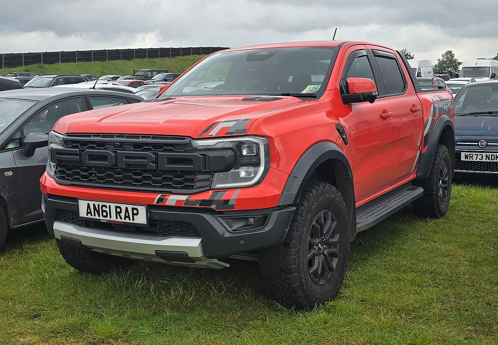

▲ 폭스바겐 테네시 채터누가 조립공장. ID.4 생산을 조기 중단하며 가동률 저하 문제에 직면했다
폭스바겐이 미국 사업 재편을 위해 최대 10만 명 규모의 감원 계획을 검토하고 있습니다. 이는 이미 발표된 5만 명 감축안에 추가되는 규모입니다. 배경에는 테네시 채터누가 공장의 가동률 저하가 있습니다. 전기차 보조금 축소와 수요 둔화로 ID.4 생산을 조기에 멈추면서, 공장이 유휴 상태에 놓인 것이 직접적인 계기가 됐습니다.
1. ID.4 생산 중단이 쏘아 올린 위기
테네시 채터누가 공장은 폭스바겐의 북미 전기차 생산 거점이었습니다. 하지만 미국 정부의 전기차 보조금 축소와 수요 둔화가 겹치면서 ID.4 생산을 계획보다 일찍 중단했습니다. 그 결과 공장은 상당한 유휴 생산력을 떠안게 됐고, 이는 폭스바겐 미국 법인 전체의 수익성 악화로 이어졌습니다. 감원 검토는 이 유휴 인력과 생산력 문제를 해결하기 위한 고육지책으로 풀이됩니다.
이번 구조조정은 미국 법인에 국한되지 않습니다. 하노버·츠비카우·엠덴, 그리고 아우디 네카줄름까지 독일 내 주요 공장 4곳도 함께 구조조정 검토 대상에 올랐습니다. 유럽의 과잉 생산능력을 줄이는 동시에, 미국에서는 수익성 높은 차종에 집중하는 '선택과 집중' 전략이 대서양 양쪽에서 동시에 진행되고 있는 셈입니다.

▲ 폭스바겐 ID.4. 채터누가 공장에서 생산되던 전기 SUV로, 보조금 축소와 수요 둔화로 생산이 조기 중단됐다
2. 세단·소형 EV 대신 픽업트럭을 택한 이유
폭스바겐의 대응 전략은 시장 철수가 아니라 '선택과 집중'입니다. 세단과 소형 전기차 대신, 미국 전용 픽업트럭을 개발해 2030년 출시를 목표로 삼았습니다. 배경에는 명확한 숫자가 있습니다. 픽업트럭은 미국 신차 판매의 약 20%를 차지하는 반면, 폭스바겐의 현재 미국 시장 점유율은 약 4%에 불과합니다. 세단·해치백 중심의 기존 라인업으로는 승산이 없다고 판단하고, 미국인들이 실제로 가장 많이 사는 차종에 정면으로 뛰어드는 전략을 택한 셈입니다.
| 항목 | 내용 |
|---|---|
| 추가 감원 검토 규모 | 최대 10만 명 |
| 기존 발표된 감축 | 5만 명 |
| 폭스바겐 미국 점유율 | 약 4% |
| 美 신차 시장 내 픽업 비중 | 약 20% |
| 신규 픽업 출시 목표 | 2030년 |
| 유력 생산 후보지 | 채터누가 공장 |

▲ 폭스바겐 아마록. 포드 레인저와 플랫폼을 공유하는 기존 협업 사례로, 미국 전용 픽업 개발에도 비슷한 파트너십이 거론된다
3. 포드와의 협업, 다시 이어질까
업계에서는 미국 전용 픽업트럭 개발에 포드와의 협업이 유력하게 거론됩니다. 폭스바겐의 아마록은 이미 포드 레인저와 플랫폼을 공유하고 있고, 반대로 포드는 유럽에서 폭스바겐의 MEB 전기차 플랫폼을 활용해 자사 전기차를 생산하고 있습니다. 이런 상호 기술 교환 구조가 이번 미국 전용 픽업 프로젝트에도 이어질 가능성이 높다는 관측입니다. 채터누가 공장의 유휴 생산력을 활용해 신형 픽업을 생산하는 방안이 유력한 후보로 꼽힙니다.

▲ 포드 레인저. 폭스바겐 아마록과 플랫폼을 공유하는 파트너 모델로, 미국 픽업 시장의 강자 포드·GM·램·토요타와의 경쟁이 폭스바겐 앞에 놓여 있다
4. 2030년까지 버텨야 하는 위험
다만 이 전략에는 상당한 리스크가 따릅니다. 신형 픽업트럭이 실제로 나오는 시점은 2030년으로, 그때까지 폭스바겐은 미국 시장에서 픽업트럭 없이 4%대 점유율로 버텨야 합니다. 게다가 미국 픽업트럭 시장은 포드, GM, 램(스텔란티스), 토요타가 수십 년간 다져온 텃밭입니다. 브랜드 충성도가 유독 강한 세그먼트인 만큼, 후발주자인 폭스바겐이 생산 방식과 상품성에서 확실한 차별화를 보여주지 못하면 진입 자체가 무의미해질 수 있습니다.
5. 정리 — 폭스바겐의 미국행 승부수
10만 명 감원 검토는 단순한 비용 절감이 아니라, 폭스바겐이 미국 시장에서의 사업 모델 자체를 다시 짜고 있다는 신호입니다. 세단과 소형 전기차로는 승산이 없다고 판단하고, 미국인들이 실제로 사는 차인 픽업트럭에 회사의 미래를 걸었습니다. 다만 이 승부수가 통하려면 앞으로 4년간의 공백기를 버텨내야 하고, 포드와의 파트너십이 실제로 성사돼야 하며, 무엇보다 미국 소비자들이 독일 브랜드의 픽업트럭을 받아들여야 합니다. 어느 하나라도 어긋나면, 이번 구조조정은 회복이 아니라 축소의 시작이 될 수 있습니다.